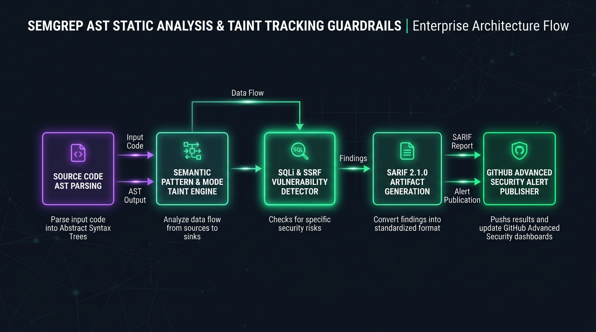

Semantic abstract syntax tree rules, taint tracking for SQLi/SSRF & SARIF reporting
Author custom Semgrep AST static analysis policies, taint tracking rules for SQL injection and SSRF, and automated SARIF publishing to GitHub Security tab.
Security Telemetry & Compiled Blueprint
Analysis Engine
Semantic AST Match
Taint Tracking
Source -> Sink Flow
Reporting Standard
OASIS SARIF 2.1.0
rules:
- id: detect-tainted-sql-injection
languages: [python, javascript, go]
severity: ERROR
message: "Untrusted user input directly concatenated into SQL query"
mode: taint
pattern-sources:
- pattern: request.args.get(...)
- pattern: req.query[...]
pattern-sinks:
- pattern: db.execute(...)
- pattern: cursor.execute(...)
Semgrep AST Policy Guardrails Studio Enterprise Topology

Overview & Architectural Superiority
Author custom Semgrep AST static analysis policies, taint tracking rules for SQL injection and SSRF, and automated SARIF publishing to GitHub Security tab.
Enterprise Production Scenarios
- Cryptographic Verification: Prevent tampering in CI/CD pipeline artifact creation and deployment.
- Automated Gating: Enforce zero-tolerance security rules before artifacts schedule onto Kubernetes clusters.
- Zero Bastions / Zero Static Keys: Ephemeral, identity-based sessions verified against immutable transparency ledgers.
Infrastructure & Software Technology Stack
Static Analysis
- • Semgrep OSS 1.80+
- • Tree-Sitter AST Parser
- • Interprocedural Taint Mode
Vulnerability Coverage
- • OWASP Top 10 (A01 - A10)
- • CWE-89 SQL Injection
- • CWE-918 Server-Side Request Forgery
Security CI/CD
- • GitHub Code Scanning SARIF
- • Pre-Commit Git Hooks
- • SonarQube Quality Gates